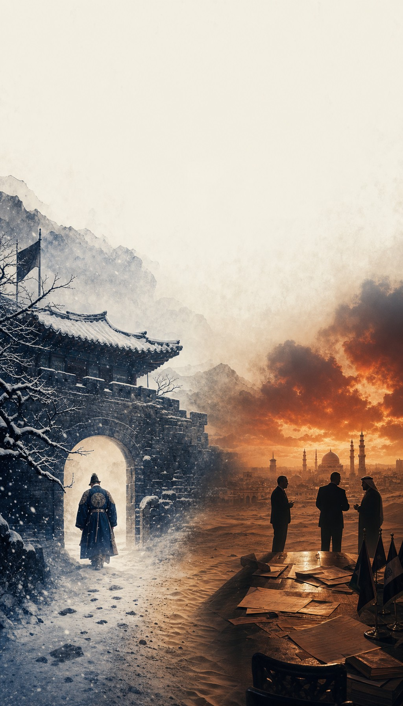
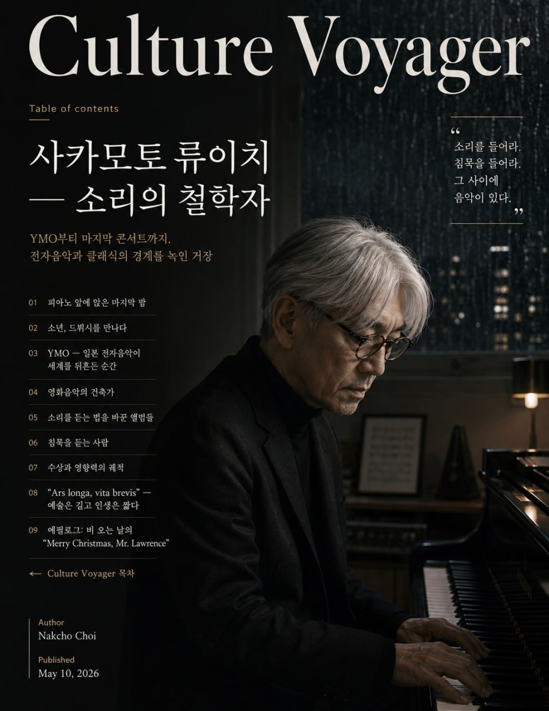
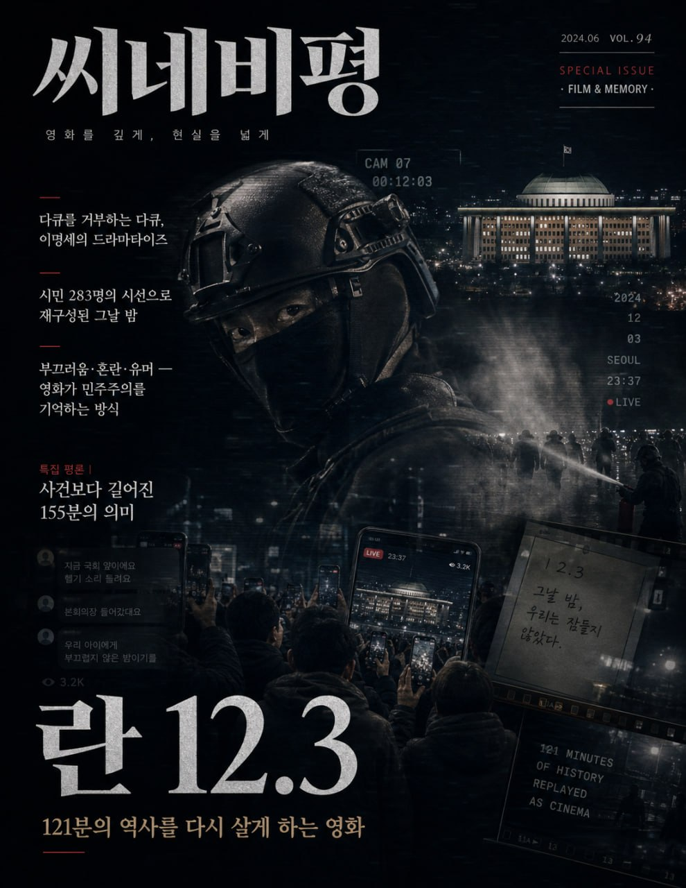
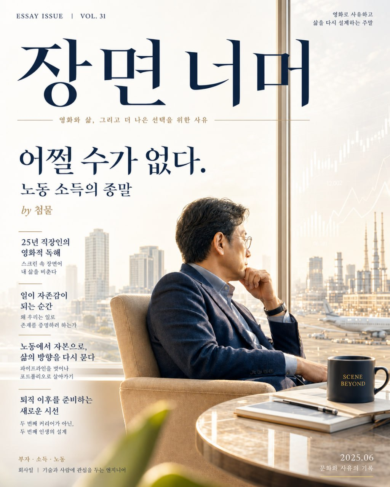
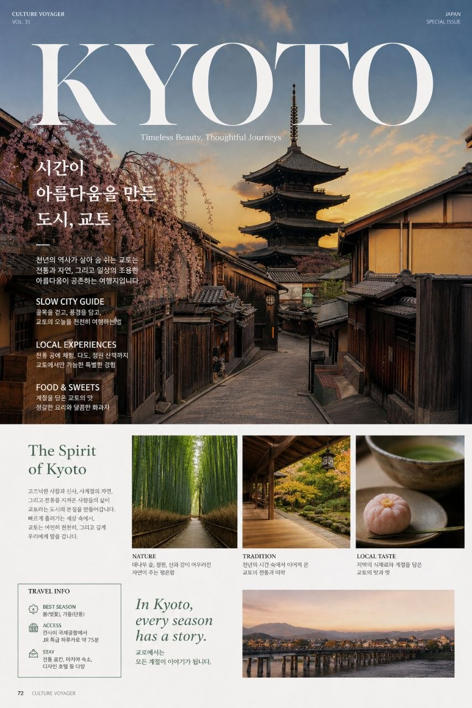
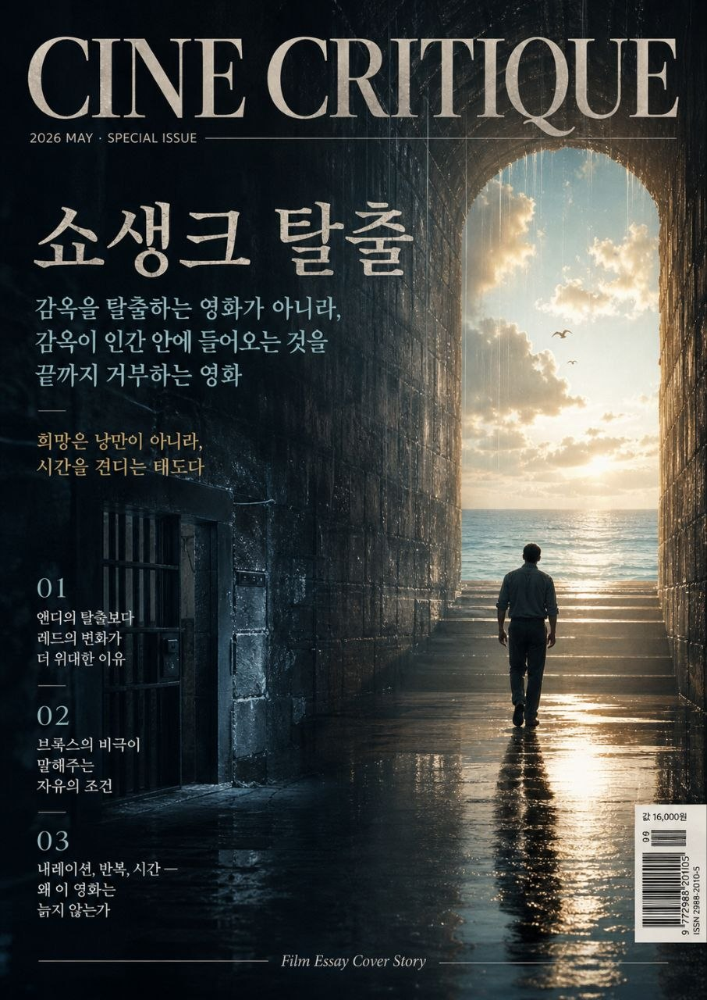

시대를 관통하는 영화, 삶을 바꾸는 책,
과학자의 발자취를 따라 떠나는 여행.
주말, 한 편의 이야기로 쉬어가세요.
영화 · 책 · OTT · 역사 · 과학 순례 · 여행 · 아티스트
발행일 순으로 정렬됩니다






한 편의 영화가 인생을 바꾸기도 합니다
한 권의 책이 세상을 보는 렌즈를 바꿉니다
넷플릭스, 애플TV+, 디즈니+ 정주행 가이드
과거를 알아야 미래가 보입니다
위대한 과학자의 발자취를 따라 세계를 걷는다 — 박문호 스타일
읽는 것만으로도 떠나는 기분이 드는 여행지
감독, 배우, 음악가 — 창작의 비밀을 엿보다